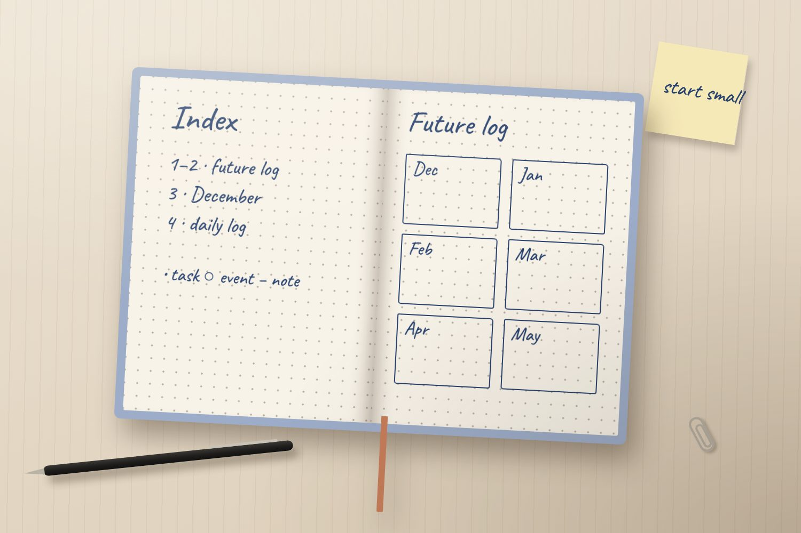

· How To · 1 min read
Starting a bullet journal in ten minutes

No stencils, no perfect lettering, no forty-page setup. A beginner layout you can copy tonight.
Bullet journaling has a reputation for being complicated. It doesn't need to be. All you need is a dotted notebook, a pen, and ten minutes.
The four pages to start with
- Index — leave the first two pages blank and add page numbers as you go.
- Future log — one page split into six boxes for the next six months.
- Monthly log — dates down the left, key events beside them.
- Daily log — today's date, then short bullets: • task, ○ event, – note.
Keep it ugly
The best journal is the one you actually use. Cross things out, change the layout next month, and let the pages be messy. That is what they are for.